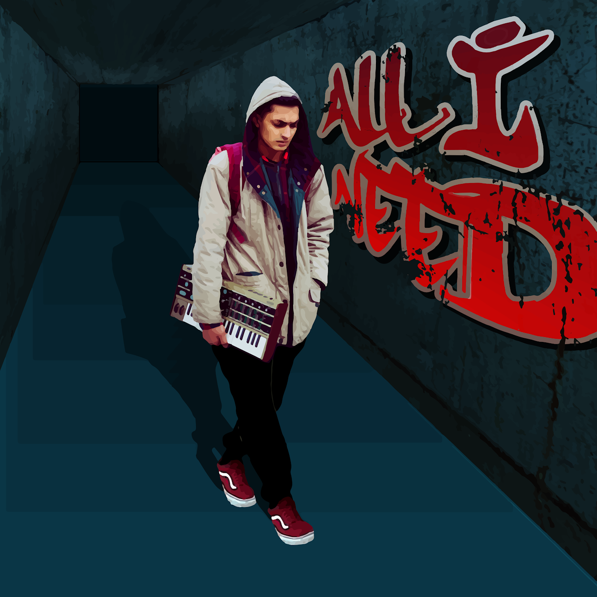
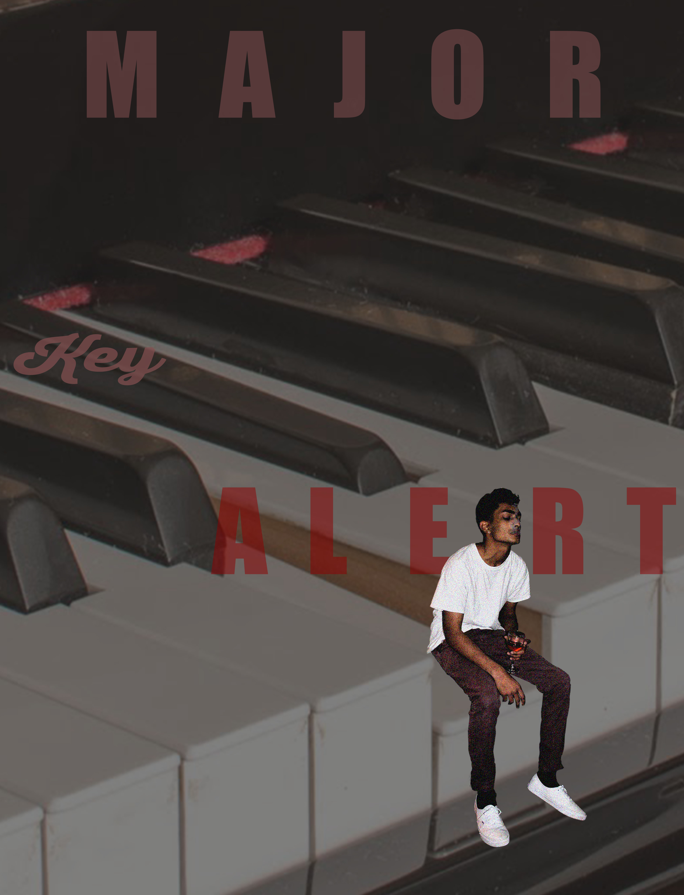

Showcase
An example of how you made a choice related to genre or audience.
In this project, I chose to use my cover art for "All I Need" in order to captivate an audience. The audience I was creating this for was one that was involved with music or would be interested in my musical growth.
I mention before about how I achieved this, by importing a picture into illustrator/inDesign and manipulating the image to look cartoonish. I was happy with this design, but not so much with font choice
In the future, I think my choice of font will definitely add a better feel to this whole project. I added a grainy effect to the 'walls' to add more depth. This was something that I was interested in doing because it showcased a world that was somewhat distorted and imperfect
I might add a lighter effect on this image as well as time goes on, just because the whole theme of it is quite dark and unsettling.
PhotoShop: Typography/layering project
An example of how you made a choice related to color, fonts, captions, scale, or other aspects of the visual mode
In this project, I wanted to again include a musical aspect. Specifically, I wanted to include the piano similar to the logo design, but in a more 3D, captivating manner. After my friend took a few photos of me sitting down on a table, I imported that image into PS and added effects to it.
These effects included grain filter, sharpening, contrast changes, hue/saturation effects, and lightness within the image. Cutting out my body with the pen tool was also nice, because I could zoom in and make the cuts precisely
Once I had my body cut out appropriately, I found an image online of a piano with a key pushed down. The ultimate goal was to have my body sitting on a piano key with some text around me. I figured that if I found an image with the key pressed down, it would create a more realistic effect as to me sitting down on it.
After looking at several fonts, I decided to stick with something simple and easily readable. I chose a maroon like color to match the pants I was wearing, so it seemed more aesthetically pleasing. I chose to type "MAJOR KEY ALERT," while using a different font for the word "KEY." I skewed this layer to add more variety within the image.
Overall, I feel as if this project turned out the way I had envisioned it. One aspect I could incorporate next time is maybe using a different font and making it stand out more.
